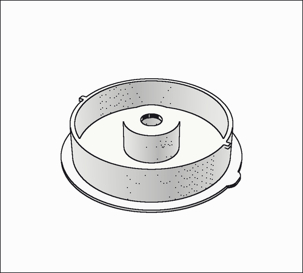
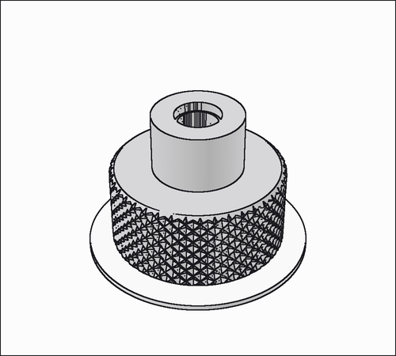
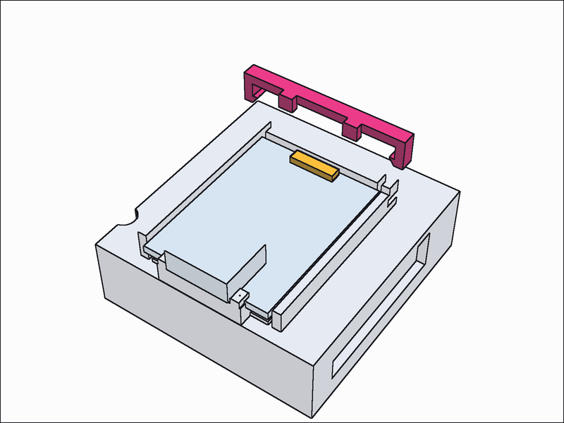
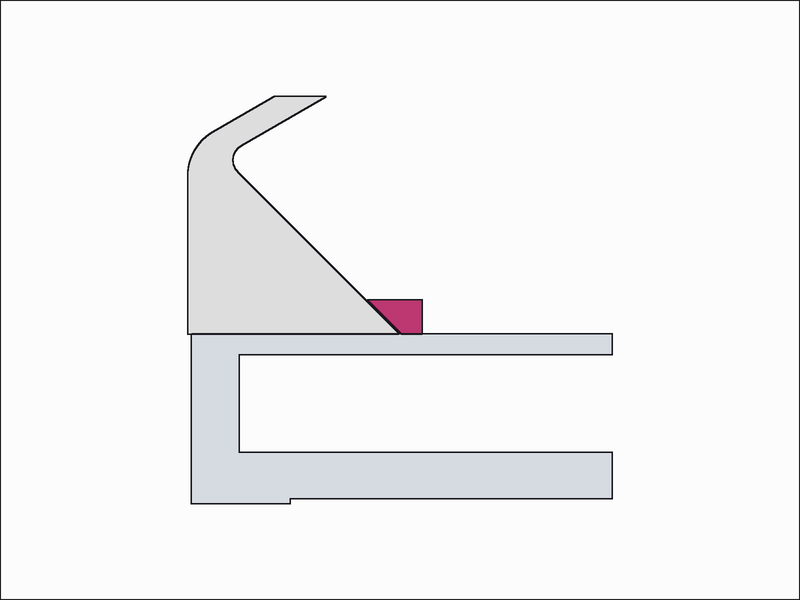

Print and assembly guide · housing revision 2026-11-18 · generated from print/
The whole controller, pulled apart. Knob cap on top, translucent hood over the LED ring, the shell,
the bottom plate with the C3-Zero board, and the two TPU pads underneath.
What changed in this revision
Change
What you'll notice
Lip on the bottom plate
The plate drops into the shell and stops sliding. The lip sits 0.1 mm inside the walls.
Two-tooth clip
The clip holds the board either side of its red chip antenna, not on it.
Board 0.4 mm further in
The board's USB end no longer bumps the back wall as the plate goes on.
Port tab with two hooks
A tab under the overhanging USB port pinches the board end to end, and two small hooks beside the port hold that end down. It also closes the gap under the port.
TPU pads for feet
Two 15 × 60 mm pads glue into shallow recesses, replacing the four round feet.
The shell does not change: shell_v6 works with the new plate.
1 · Printing
The STLs come out already lying the right way. Import them into Bambu Studio and don't rotate them.
Settings not listed here are Bambu's defaults. Only the shell needs support, and only along one edge.
Which file to print
Part
File (in print/stl/)
Material
Qty
Shell
shell_v6.stl (unchanged)
opaque PLA or PETG
1
Bottom plate
bottom_v7.stlnew
opaque PLA or PETG
1
C3 clip
c3_clip_v3.stlnew
PETG (PLA may crack at the snap)
1
Hood
hood_v2.stl
translucent PETG
1
Knob cap
cap_v3.stl (or cap_v3b, 10 mm disc)
opaque PLA or PETG, 100% infill
1
Nut driver
nut_driver_v1.stl
opaque PLA or PETG
1
Shell: on its back wall, open bottom to the sideBottom plate: outside face down, cradle and lip upC3 clip: on its front face, in PETG

Hood: upside down, top face on the bed

Knob cap: upside down, 100% infill
The light-grey outline under each part shows which side touches the bed.
Shell: paint support on the front rim edge
Looking into the open bottom. Paint the strip along the inner front rim.
The inside of the front wall is a 45° ramp, but where it meets the open rim it starts as a long line
with nothing under it. Bambu treats that as a bridge and won't support it, so the first layers sag.
Do this: keep auto-support off. Use the support-painting tool to paint a thin strip along that
inner front rim edge. In Preview, check that support appears under the strip.
Bottom plate: pause to drop in the weights
Four ½ oz weights (19.65 × 22 × 5.8 mm) are sealed inside the plate as it prints.
In the Preview's layer slider, find the first layer above 8.8 mm (9.0 mm at 0.2 mm layers).
Right-click it and add a pause.
When the printer pauses, drop one weight into each corner pocket. Leave the sticky backing on; the
5.8 mm includes it. Check none sticks up past the pocket top.
Resume. The printer seals over them.
The plate at the pause, with the weights going in.
Hood: which plate
Textured PEI (no glue) gives a frosted face that spreads the light best. Smooth PEI or the
Engineering plate need glue stick for PETG and give a glossier face. Avoid the Cool Plate for PETG.
Let the plate cool fully before popping parts off.
2 · Wiring
The C3-Zero is the only place anything plugs in. Unplug its jumpers and the plate, with the board on it,
lifts away. You solder one header on the board, and half-jumpers on the ring and the knob board.
Viewed from above, the board face-up with its USB end toward the box's back wall. Every wire is half a
female jumper: soldered end (grey dot) on the ring or knob, plug (black) pushed onto the header.
The knob's GND is a plain wire spliced onto the ring's GND jumper, so one plug carries both.
Header pin (from the USB end)
Plug on it
Soldered end
1 · 5V
ring 5V jumper
ring pad 5V
2 · GND
ring GND jumper + knob GND spliced on
ring pad GND; knob GND stub (plain wire)
3 · 3V3
knob + jumper
knob stub +
4 · GPIO0
ring DIN jumper
ring pad DIN (optional 330 Ω inline)
5 · GPIO1
empty
6 · GPIO2
empty (a boot pin: leave it free)
7 · GPIO3
knob CLK jumper
knob stub CLK
8 · GPIO4
knob DT jumper
knob stub DT
9 · GPIO5
knob SW jumper
knob stub SW
Wire colours here are only for reading the diagram; use whatever jumper colours you have, but label
them or note which is which.
2 · Wiring: soldering steps
A. The header on the C3-Zero
Find the row. Board face up, USB end at the top: it's the left column of 9 holes, on the
BOOT-button side. Flip the board and check the silkscreen: the hole nearest the USB end reads 5V,
then GND, 3V3, 0, 1, 2, 3, 4, 5. If it doesn't, stop and tell Claude: the model assumes this row.
Header on top, short pin ends down through all 9 holes, plastic flat on the board.
Legs sideways, pointing away from the board (toward the box's middle). Not up, not over the board.
If the legs come bent at 45°, bend them to 90° first.
Solder underneath, one pin first, check it sits flat, then the rest. Keep the joints low: the cradle
has grooves under the pin rows for them.
Side view of one pin.
B. The ring
Cut three female jumpers in half. Keep the plug halves.
Strip ~3 mm and solder one cut end to each ring pad: 5V, GND, DIN.
Optional: put a 330 Ω resistor inline in the DIN wire.
Note which plug is which (tape flags or colours). They go through the face slot in assembly step 2.
C. The knob board (KY-040)
Clip its right-angle pins to short stubs.
Cut four female jumpers in half. Solder a cut end to each of +, CLK, DT, SW.
Solder a short plain wire (no plug) to GND. It gets spliced in assembly step 3.
D. The GND splice (in assembly step 3)
The C3-Zero has one GND pin and only one plug fits on it, so the knob's GND joins the ring's GND jumper.
After the ring wires are through the face slot: strip ~5 mm from the middle of the ring's GND jumper, wrap the
knob's plain GND wire round it, solder, and cover it with tape or heat-shrink. Only the ring's GND plug goes on pin 2.
3 · Assembly
Work with the shell upside down (open bottom up). The knob cap goes on last, so the box never rests on it.
Solder everything first (see Wiring): the header on the C3-Zero, the half jumpers on the knob board
and the ring, the plain GND wire on the knob board.
Ring. Thread the ring jumpers' plugs down through the slot in the face, lay the ring flat, turn it to its
12 o'clock position and fix it with two small pieces of tape. The firmware assumes it never turns.
GND splice. Inside the shell, splice the knob's GND wire onto the ring's GND jumper. Tape or heat-shrink it.
Hood and knob board. Set the hood over the ring, its tabs in the notches. From inside, push the encoder's
threaded collar up through the face and the hood floor; its square top drops into the frame under the face. Add the
washer and nut in the well and snug it with the nut driver. Don't crank it.
Route the ring wires along the channel under the face and top, then down the back wall.
C3-Zero onto the plate. Set the board face-up in the cradle, USB end toward the plate's back edge, header
toward the middle. Tilt it, slide the USB end in under the two small hooks against the tab, then lower the
inner end onto the platform against the stop. Press the clip down over the two side rails at the board's inner end until both legs click.
Its two teeth land on the board's edge either side of the
red chip antenna, never on it.
To remove: spread the legs and lift.

Clip lowering onto the cradle; teeth either side of the antenna. At the far (USB) end, the board's edge sits under the two hooks.
Plug in the jumpers with the plate held next to the open shell (see the pin table). Leave enough slack to
lift the plate away with the plugs still on.
Bottom plate. Slide an M3 nut into each corner post's side slot until it clicks past the bumps. Lower the
plate on. The lip drops just inside the shell's walls and stops it sliding. The board's
USB end slides into the back wall's slot and notch, and the header plugs into the recess beside them. Tuck the
wires so none is pinched, then drive the four screws up from below. Snug, not tight.
Cut through a side wall: the lip sits 0.1 mm inside it.

Cut through the front: the lip's sloped face matches the inside ramp.
Screws go up through the plate into the nuts in the corner posts.From behind: the USB port, with the port tab under it.
Feet. Glue a 15 × 60 TPU pad into each long recess on the underside, its length running front to back.
The recesses are 0.3 mm deep with 0.15 mm round each edge.
The underside: pads just inboard of the screw holes.
Knob cap. Turn the box onto its feet and push the cap onto the shaft. The flat side matches.
To get at the board later (or its BOOT button): unscrew the plate, lift it away, unplug the jumpers.
4 · Fit checks for this revision
Each fit has its own number in print/lib/params.scad, so changing one never moves another.
After changing one, run bash print/tests/run.sh export and print the new _vN file. Full details: print/README.md.
(i) The plate drops into the shell
Lower it in without screws. It should go in with a light push and not slide.
Won't go in or needs force: raise lip_fit (now 0.1) to 0.15. Slides: lower it to 0.05.
The back stop is the C3 cradle's back end (no lip fits on the back wall); it follows lip_fit too.
(j) The clip holds the board
Both teeth sit on the board's edge either side of the antenna, and the board doesn't lift.
A tooth touches the antenna: raise c3_ant_w (now 6.4) to the measured length plus 0.4.
(l) The board sits firm
With the clip on, the board shouldn't lift at either end or slide. Won't go under the hooks or too tight: raise
c3_pinch_fit (now 0.1) to 0.15. Rattles: lower it to 0.05. A hook snapped: raise c3_hook_t
(now 0.6) to 0.8, or print the plate in PETG.
(k) The board clears the back wall
If the USB end still catches as the plate goes on, raise c3_slot_clr (now 0.4) to 0.5.
(g) USB plug Measured: 12.12 × 6.6 and 11 × 6.1 mm. Both fit the 12.5 × 7.5 hole.
(h) Header legs, still to measure
Measure how high the middle of the bent legs sits above the board's top (hdr_leg_z, now 1.4),
how far they reach past the plastic (hdr_leg_out, now 6), and the jumper plug size (plug,
now 2.54 × 2.54 × 14).
Other fits (change only if a real part fails)
Number
Now
What it sets
c3_fit
0.2
C3-Zero slot: board play, width, height
m3_nut_fit
0.2
M3 nut slots in the corner posts
plate_fit
0.2
Plate's outside edge inside the shell outline
pad_fit
0.15
TPU pad recesses, each edge
key_fit / bore_fit / body_fit
0.1 / 0.15 / 0.07
Hood key, knob bore, encoder frame (tested on the coupons)
Bought parts
Part
Use
4× M3 × 10 socket-head screws, 4× M3 hex nuts
Plate to shell; the nuts sit in the corner posts
4× ½ oz weights, 19.65 × 22 × 5.8 mm
Sealed in the plate during the print pause
9-pin 2.54 mm right-angle header, 7 female jumper wires
The C3-Zero's only plug point
Thin double-sided tape (or hot glue)
Holds the ring at 12 o'clock
2× TPU pads, 15 × 60 × 1.4 mm, and super glue or contact cement